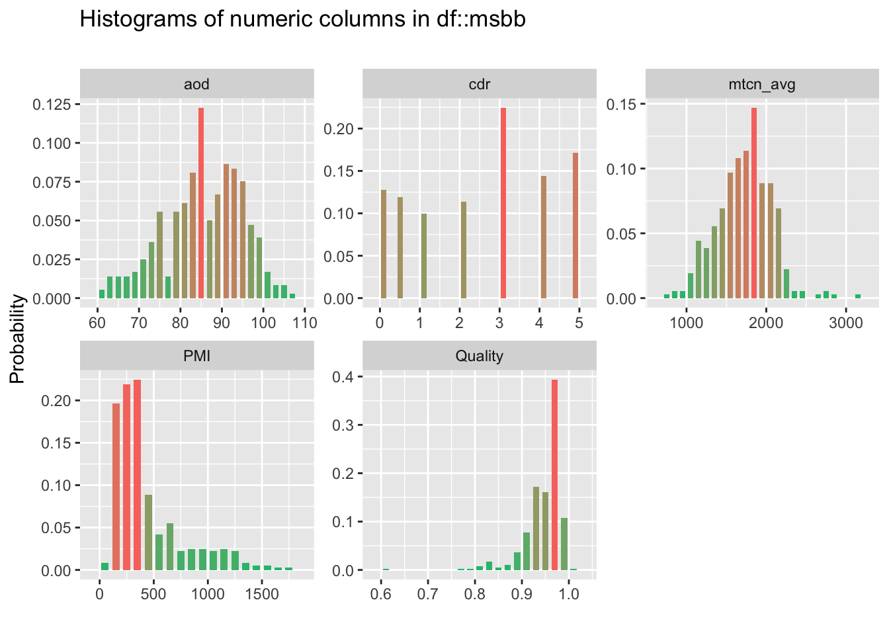
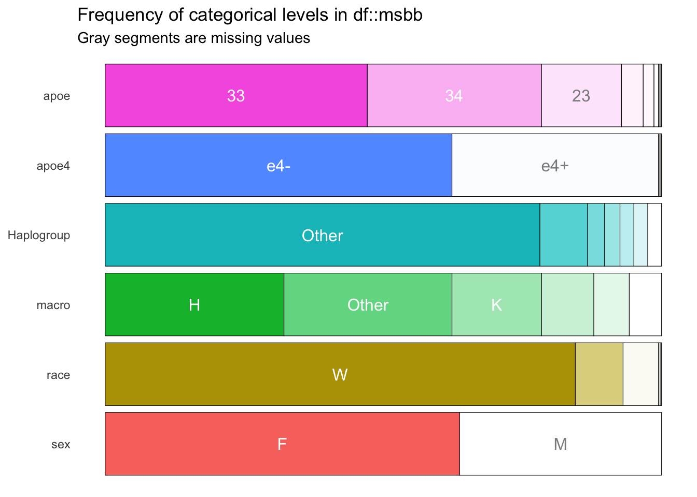

4.2 Other Variables
| col_name | min | q1 | median | mean | q3 | max | sd | pcnt_na |
|---|---|---|---|---|---|---|---|---|
| PMI | 75.00 | 220.00 | 315.00 | 437.21 | 537.00 | 1800.00 | 325.97 | 0.00 |
| cdr | 0.00 | 1.00 | 3.00 | 2.49 | 4.00 | 5.00 | 1.73 | 0.00 |
| aod | 61.00 | 79.50 | 85.00 | 85.09 | 92.00 | 108.00 | 9.37 | 0.55 |
| mtcn_avg | 734.20 | 1513.48 | 1738.74 | 1726.30 | 1943.53 | 3151.59 | 340.58 | 0.00 |
| Quality | 0.62 | 0.93 | 0.96 | 0.95 | 0.97 | 1.01 | 0.04 | 0.00 |

